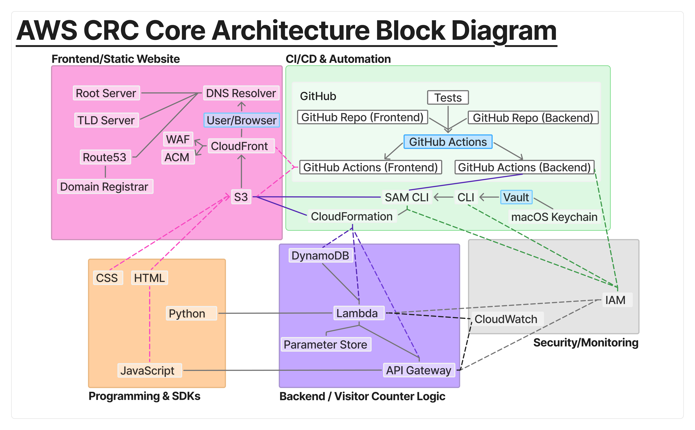
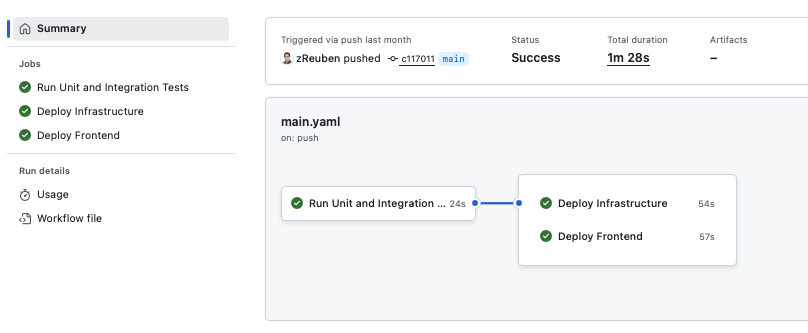

Cloud Resume Challenge
How I built a full-stack, serverless, CI/CD-driven resume site on AWS
After completing my AWS Solutions Architect Associate certification, I wanted to put the concepts into practice with a hands-on build. I chose the Cloud Resume Challenge because it ties together DNS, serverless APIs, Infrastructure as Code, CI/CD pipelines, and security hardening in one cohesive project. Before I wrote any code, I sketched out an architecture plan that would serve as my blueprint.

Step 1: Domain and Frontend
I began by purchasing my domain through Route 53 and configuring it as the DNS provider. With that in place, I created an S3 bucket to host the static site (HTML, CSS, JS) and distributed it via CloudFront. ACM provided HTTPS certificates, and Route 53 handled DNS records for clean routing. This gave me a secure, production-grade foundation for my personal site. For rapid iteration around CloudFront caching, I set TTL to 0 during development.
Step 2: Dynamic Visitor Counter
To extend the static site, I built a serverless backend. JavaScript in the browser sends requests to API Gateway, which invokes Python Lambda handlers. The Lambdas read and update a DynamoDB table that stores the visitor count, then return results to the frontend in real time. I kept the handlers single-purpose after weighing monolithic vs microservice approaches for clarity and testability, and secured everything with least-privilege IAM and scoped CORS.
Step 3: Infrastructure as Code
All of this was defined in AWS SAM templates, which generate CloudFormation stacks. No console clicks — everything is repeatable and versioned. I avoided hardcoding names or secrets by parameterizing values in SAM, which kept the stack portable.
Step 4: CI/CD Automation
Once the site and backend worked, I moved everything into GitHub Actions.
Pushes to my repos trigger workflows that run unit, integration, and end-to-end tests before deploying.
Successful runs upload frontend files to S3, invalidate CloudFront caches, and use sam deploy
to roll out backend updates. This ensures every change is tested and deployed automatically.
At this stage I was only deploying to a single production environment.

Security Practices
- MFA on all accounts, with AWS Vault for local role assumption.
- Secrets isolated per environment; nothing committed to source control.
- IAM policies tightly scoped, CORS explicitly set to my domain.
- GitHub → AWS authentication via OIDC (no long-lived keys).
What I Learned
- How the full stack fits together: static frontend, REST API, database, IaC, and CI/CD.
- Importance of single-purpose Lambdas and versioned assets for maintainability.
- How DNS, ACM, and CloudFront deliver a production-grade site.
- Value of automating tests and deployments, even for small projects.